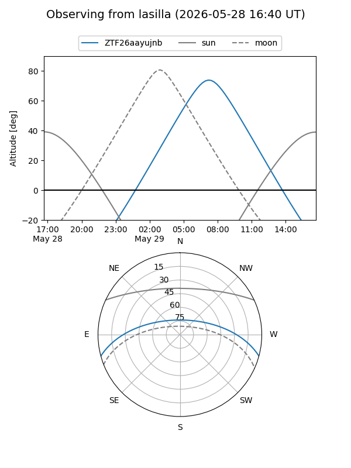
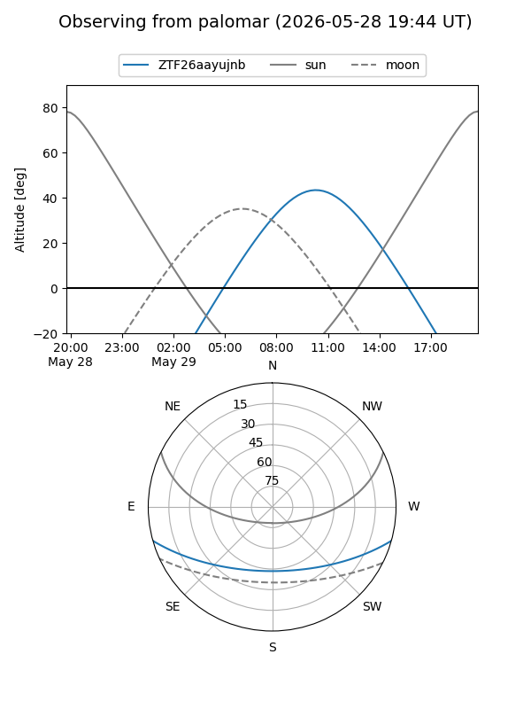

ZTF26aayujnb
Target ZTF26aayujnb at 2026-05-29 12:16
Aliases and brokers:
lsst-FINK: link
lsst-Lasair: link
lsst-ALeRCE: link
ztf-FINK: link
ztf-Lasair: link
ztf-ALeRCE: link
alt names
ZTF26aayujnb (ztf,fink_ztf)
Coordinates:
equatorial (ra, dec) = 284.1446,-13.22692
equatorial (HMS+DMS) = 18:56:34.71,-13:13:36.90
galactic (l, b) = (21.6766,-7.10938)
Flags:
Photometry:
last ztfg=19.61
2 ztfg detections
Lightcurve
Visibility


Additional plots